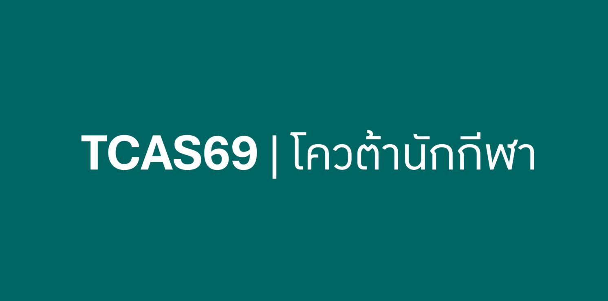

โควต้านักกีฬาไม่ใช่ทางลัด แต่เป็นอีกสนามที่แข่งขันดุเดือดพอ ๆ กับรอบพอร์ตและเต็มไปด้วยต้นทุนที่คนภายนอกมองไม่เห็น
{kind=link}

บทความนี้ตั้งต้นจากความเข้าใจผิดที่พบได้บ่อยว่า โควต้านักกีฬา = ทางเข้าแบบง่าย ผู้เขียนตอบอย่างตรงไปตรงมาว่าไม่จริง และใช้ประสบการณ์ของลูกสาวตัวเองมาอธิบายให้เห็นว่า แม้จะยื่นในฐานะนักกีฬาทีมชาติ แต่ก็ไม่ได้แปลว่าจะผ่านง่าย เพราะคู่แข่งในสนามเดียวกันก็เป็นทีมชาติและมีผลงานระดับนานาชาติเช่นกัน
สิ่งที่โพสต์นี้ทำได้ดีมากคือการเปิดให้เห็นความจริงของระบบว่า ต่อให้เกณฑ์บนกระดาษดูเหมือนเปิดกว้าง แต่ในสนามจริงคนที่ได้โควต้าส่วนใหญ่ก็ยังเป็นกลุ่มที่อยู่ในระดับสูงมากอยู่ดี นั่นทำให้เส้นทางนี้ไม่ใช่ทางลัด แต่เป็นอีกสนามที่ต้องรู้จัก ประเมินเกมของตัวเอง อย่างแม่นยำ
จุดเด่นของบทความนี้คือการแยกคำว่า “เกณฑ์รับ” ออกจาก “การแข่งขันจริง” อย่างชัดเจน แม้เกณฑ์บางคณะจะเขียนเพียงว่าเหรียญกีฬาแห่งชาติหรือเหรียญชิงแชมป์ประเทศไทยก็สมัครได้ แต่ในความเป็นจริง คนที่ได้โควต้ามักอยู่ในระดับทีมชาติแทบทั้งหมด นี่คือสิ่งที่ทำให้สนามนี้ ไม่ง่ายกว่ารอบอื่น อย่างที่คนภายนอกจินตนาการ
ต้นทุนของการเป็นนักกีฬาไม่ได้อยู่แค่แรงกาย แต่คือเงิน เวลา และชีวิตทั้งระบบ
ผู้เขียนเล่าละเอียดมากว่าต้นทุนของการเป็นนักกีฬามหาศาลกว่าที่หลายคนคิด ตั้งแต่ค่าโค้ช อุปกรณ์กีฬา รองเท้า ลูกปิงปอง ค่าเดินทาง ค่าที่พัก และค่าสมัครแข่งขัน ทั้งหมดนี้ผู้ปกครองต้องจ่ายเอง พร้อมกับต้องแบกความเสี่ยงว่าหากเวลาหลุด การเรียนก็อาจพังได้ง่ายมาก
มุมนี้สำคัญ เพราะทำให้เราเห็นว่าโควต้านักกีฬาไม่ได้เป็นเพียงผลลัพธ์ของ “ความสามารถพิเศษ” แต่เป็นผลของระบบฝึกซ้อมที่มีต้นทุนสูงมาก และคนที่มาถึงจุดนี้ได้จริงมักผ่านกระบวนการคัดกรองทางเศรษฐกิจ เวลา และวินัยมาแล้วโดยปริยาย
สิ่งสำคัญไม่ใช่ว่ารอบไหนง่ายกว่า แต่คือเด็กต้องรู้ว่าตัวเองกำลังแข่งในสนามแบบไหน
หนึ่งในข้อสรุปที่คมที่สุดของโพสต์คือ ประตูไหนก็ยากหมด ไม่ว่าจะพอร์ต โควต้า หรือคะแนนสอบ สิ่งสำคัญที่สุดจึงไม่ใช่การถามว่ารอบไหนง่ายกว่า แต่คือเด็กต้องรู้ว่า ตัวเองกำลังแข่งในสนามแบบไหน และพร้อมจะสู้ในระดับใด
นี่เป็นมุมมองที่ดีมากต่อระบบ TCAS เพราะมันเปลี่ยนจากการหา “ทางลัด” ไปสู่การอ่านเกมของตัวเอง อ่านคู่แข่ง และบริหารทรัพยากรที่มีอยู่ให้เหมาะกับสนามที่เลือก
กีฬาไม่ได้มีค่าแค่เรื่องโควต้า แต่มันสร้างนิสัยนักสู้ที่ติดตัวไปตลอด
แม้โพสต์นี้จะพูดเรื่องการคัดเลือกเข้ามหาวิทยาลัย แต่สิ่งที่ผู้เขียนย้ำกลับไม่ใช่การใช้กีฬาเพื่อแลกโควต้า เขาบอกชัดว่าไม่เคยสนับสนุนให้ลูกเป็นนักกีฬาเพื่อหวังสิทธิพิเศษ สิ่งที่อยากให้ลูกได้จริงคือความแข็งแรง วินัย ความมุ่งมั่น และการรู้จักแพ้ให้เป็น
นี่ทำให้บทความมีน้ำหนักมาก เพราะมันไม่ได้ลดทอนกีฬาให้เหลือเพียงเครื่องมือทางการศึกษา แต่เห็นว่ากีฬาเป็นกระบวนการสร้าง นิสัยนักสู้ ซึ่งมีค่ากว่าโควต้ารูปแบบใดรูปแบบหนึ่งเสียอีก
โควต้าไม่ใช่ทางลัด แต่ถ้าเด็กมีใจสู้ เขาอาจไปได้ไกลกว่าโควต้าทุกแบบ
ประโยคปิดของโพสต์นี้ทรงพลังมาก เพราะผู้เขียนสรุปว่าทางไหนก็ไม่ง่าย แต่หากเด็กมีใจสู้ เขาอาจไปได้ไกลกว่าโควต้าทุกแบบ นี่ทำให้เรื่องโควต้านักกีฬาถูกวางกลับไปอยู่ในตำแหน่งที่ควรเป็น คือเป็นเพียงหนึ่งในสนาม ไม่ใช่คำอธิบายทั้งหมดของศักยภาพเด็กคนหนึ่ง
ดังนั้น บทความนี้จึงไม่ได้เพียงแก้ความเข้าใจผิดเรื่องโควต้า แต่ยังชวนให้มองระบบคัดเลือกอย่างแฟร์ขึ้น ว่าทุกสนามล้วนมีราคาของมัน และคนที่เดินผ่านสนามนั้นมาได้จริงก็มักผ่านการต่อสู้อีกหลายชั้นที่ไม่ปรากฏอยู่ในเกณฑ์บนกระดาษ